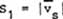
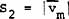
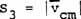
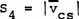

|
-- A Scalar is a Zero Vector --
Now
let us look at the idea of a scalar.
A
"scalar" may in a general sense be considered as the sum of
the "absolute values" of the individual vector components of a
system of vectors whose observable resultant is zero. That is, it
represents the magnitude of the internal stress of a vector system, with
the absence of a single observable directionality of the system.
It also follows that every scalar is actually a stressed zero vector,
and every zero vector is a scalar.
Thus we have
four major types of scalars related to the four types of vectors:
|
(a)
|

|
(25)
|
|
(b)
|

|
(26)
|
|
(c)
|

|
(27)
|
|
(d)
|
 |
(28)
|
where S stands for scalar,
for vector, and subscript s for spatial, m for mass, and c for charged.
For
example, comparing equations (25) and (26), it can easily be seen that
twice as many "point-motions" is not at all the same thing as
twice as many "gram-mass-motions." The two resulting
vector systems are quite different.
Next Page
|